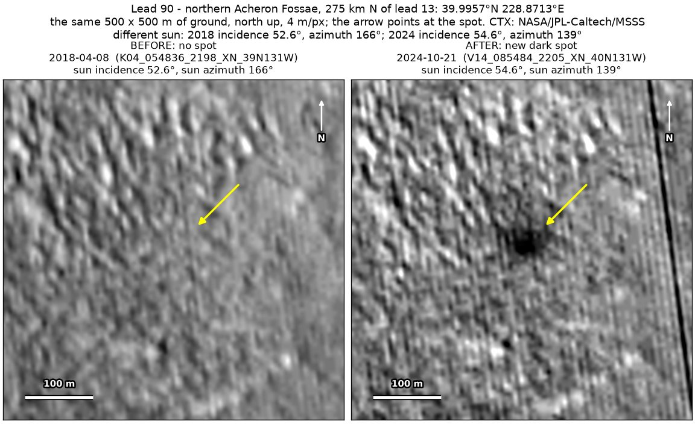
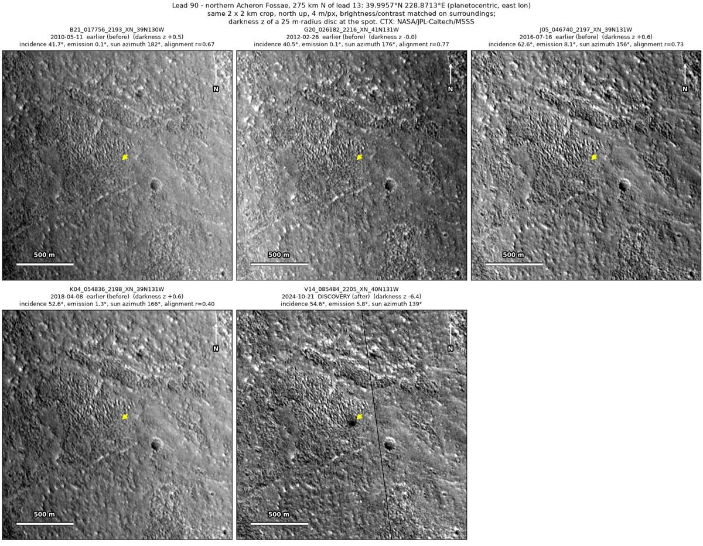
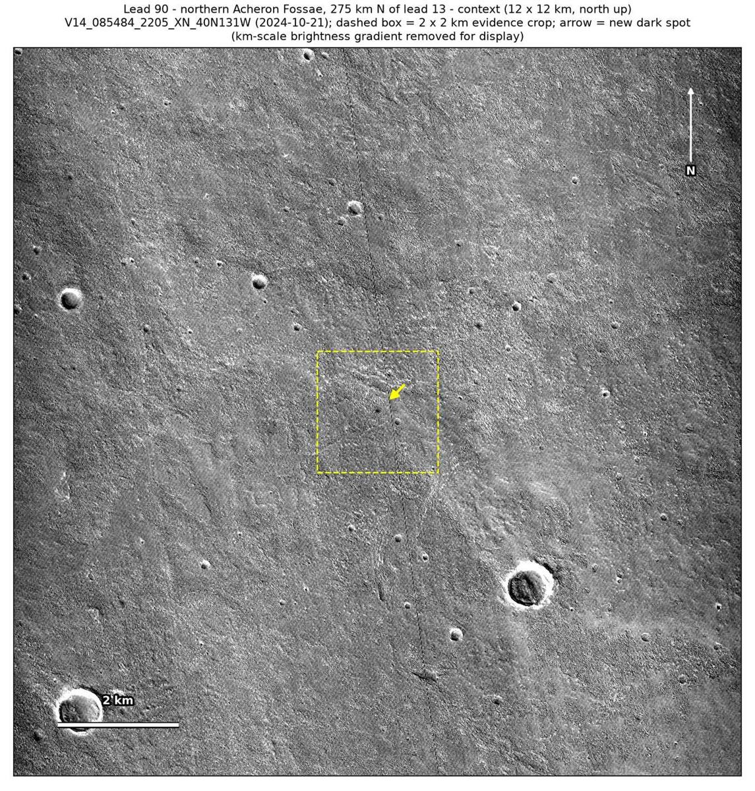

Professor of Mathematics
Paata Ivanisvili
Department of Mathematics, University of California, Irvine

← Possible new impact sites on Mars
Candidate 90: Edge of hummocky terrain in northern Acheron Fossae, 275 km north of candidate 13
Promising · roughly 65%

What changed. A compact dark spot about 50 m across, with a darker core in a diffuse halo, appeared at the southern edge of hummocky terrain in northern Acheron Fossae between April 2018 and October 2024. It is visible in one CTX image so far.
Why it may be a new impact. Four earlier images, from 2010 to 2018, all line up with the later one and show no spot there, while a dark mark 276 m to the east shows in all of them. When an earlier image is subtracted from the later one, the strongest change in the surrounding 2 × 2 km is right at the spot and nowhere else. A dark core in a gradually fading halo is how the blast zone of a small new crater looks.
- Location
- 39.996° N, 228.871° E (131.129° W)
- Absent
- 11 May 2010, 26 February 2012, 16 July 2016 and 8 April 2018
- Present
- 21 October 2024
- Size
- Compact dark spot about 50 m across (82 × 48 m), with a darker core about 20 m wide in a diffuse halo
- Confidence
- Promising candidate: roughly 65% likely to be a new impact.
- Caveat
- Only one image shows it, and that image has a thin vertical line defect about 220 m to the east, though the spot is round with a gradually fading halo. Wind could also have changed the brightness of the ground at the edge of the hummocky terrain. No image from the high-resolution HiRISE camera covers it; the nearest ends 65.7 km away. Like every candidate here, it is unconfirmed: see the caveat.

